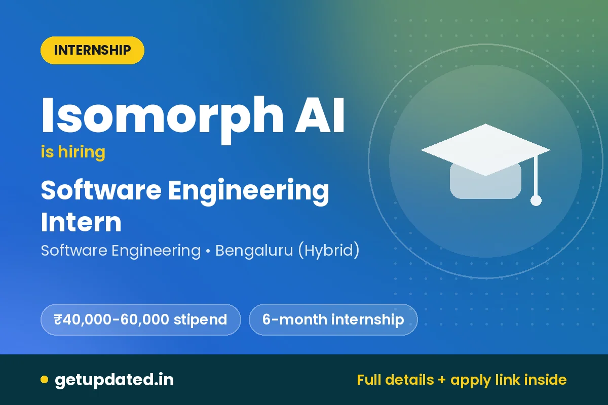

NHPC Limited has released Advertisement No. NH/Talent Acquisition/09/2026 for the recruitment of Trainee Engineers and Trainee Officers through GATE 2026 scores. The notification is dated 25 November 2026, and online applications run from 27 November to 26 December 2026 on the official NHPC website.
For engineering and science graduates who wrote GATE this year, this is one of the better central PSU openings. There is no separate written test: NHPC shortlists on your GATE marks and then holds a Group Discussion and Personal Interview. The pay is in the E2 grade, with approximate annual emoluments of Rs. 16 to 17 lakh.
This guide covers the disciplines, eligibility, pay, selection steps, how to apply, and a practical preparation plan for the GD and interview.
Table of Contents
- Quick Highlights
- About NHPC Limited
- Disciplines and Posts
- Eligibility Criteria
- Salary and Benefits
- Important Dates
- Application Fee
- Selection Process
- How to Apply
- Preparation Plan for GD and Interview
- Common Mistakes to Avoid
- Official Links and Final Checklist
- Final Takeaway
- Also Read
- FAQs
Quick Highlights
| Particular | Details |
|---|---|
| Organisation | NHPC Limited (Navratna CPSE, hydropower) |
| Advertisement No. | NH/Talent Acquisition/09/2026 |
| Posts | Trainee Engineer / Trainee Officer |
| Disciplines | Electronics & Communication, Environment, IT, Geology, Geophysics |
| Qualifying exam | GATE 2026 |
| Maximum age | 30 years |
| Pay scale | Rs. 50,000 - 3% - Rs. 1,60,000 (IDA), Grade E2 |
| Selection | GATE 2026 marks, Group Discussion, Personal Interview |
| Application start | 27 November 2026, 10:00 AM |
| Last date | 26 December 2026, 5:00 PM |
Valid GATE 2026 score plus a completed qualifying degree is the entry ticket; final-year students cannot apply.
About NHPC Limited
NHPC Limited (formerly National Hydroelectric Power Corporation) is a Navratna Central Public Sector Enterprise working in the hydropower sector. It plans, builds and operates hydroelectric projects, and it recruits engineers and officers regularly through GATE.
For a fresher, a PSU like NHPC offers job security, structured training and a clear promotion path. The company's work spans civil, electrical, mechanical, environmental and geological streams, and the disciplines in this drive support project planning, monitoring, IT systems and environmental compliance.
Disciplines and Posts
The recruitment covers five areas:
- Trainee Engineer (Electronics and Communication)
- Trainee Engineer / Officer (Environment)
- Trainee Engineer / Officer (Information Technology)
- Trainee Officer (Geology)
- Trainee Officer (Geophysicist)
The notification includes some backlog vacancies carried forward from an earlier advertisement (NH/Rectt./04/2023-24), along with vacancies identified for Persons with Benchmark Disabilities (PwBD). Information Technology has the largest share of posts, followed by Electronics and Communication and Environment. Reservation for PwBD candidates is horizontal, and you need at least 40% of the relevant benchmark disability to claim it.
Category-wise posts
Posts are spread across UR, EWS, OBC (NCL), SC and ST categories. Check the category table in the official notification for your discipline before you apply, since some disciplines have very few posts in certain categories.

Eligibility Criteria
Eligibility depends on the discipline you choose. In general, you need all of the following:
- A full-time regular qualification in the relevant discipline, with the required marks. Accepted qualifications listed are B.E./B.Tech, B.Sc (Engineering), AMIE, MCA, M.Sc, M.Tech or M.Sc (Tech), as specified for each discipline.
- A valid GATE 2026 score in the paper that matches your discipline.
- Indian nationality.
- Age not above 30 years (relaxations for reserved categories as per the notification).
- Your qualification must be already completed. Candidates appearing in the final year cannot apply.
The exact degree, branch and minimum percentage for each discipline are given in the official notification, and we recommend reading that table line by line. A mismatch between your branch and the GATE paper code is the most common reason for rejection in GATE-based PSU hiring.
Check your GATE paper
Your GATE 2026 paper must correspond to the discipline you apply for. Applying in a discipline that your GATE paper does not map to can lead to rejection at the document stage.
Salary and Benefits
Selected candidates join as trainees in E2 grade with the pay scale Rs. 50,000 - 3% - Rs. 1,60,000 (IDA). Together with allowances and other benefits, the annual emoluments are approximately Rs. 16 to 17 lakh, as reported in the listing.
| Stage | What happens |
|---|---|
| Training | One year in E2 grade |
| Absorption | Appointed as Engineer or Officer after successful training |
| Probation | One year after absorption |
Treat the Rs. 16-17 lakh figure as an approximate total, not a fixed take-home. Actual in-hand pay depends on allowances, city of posting and deductions.
Important Dates
| Event | Date |
|---|---|
| Notification date | 25 November 2026 |
| Online registration starts | 27 November 2026, 10:00 AM |
| Last date to apply | 26 December 2026, 5:00 PM |
Do not wait for the last day
Government portals slow down near closing time. Complete your application at least a few days before 26 December 2026.
Application Fee
The application fee and any exemptions for reserved categories were not available in the text we reviewed. Please check the fee section of the official notification before paying, and keep the payment receipt for your records.
Selection Process
NHPC follows a simple three-part process:
- GATE 2026 marks: Candidates are shortlisted on normalized marks out of 100 in the relevant GATE 2026 paper.
- Group Discussion (GD): Shortlisted candidates are called for a GD.
- Personal Interview (PI): The final round, where technical knowledge and attitude are assessed.
There is no separate written exam, so your GATE score decides whether you get a call. The exact weightage of GATE, GD and PI in the final merit list is given in the notification.
How to Apply
- Read the full notification (link in the Official Links section below) and confirm your discipline, qualification and age.
- Keep your GATE 2026 registration details and scorecard details ready.
- Open the NHPC careers page on nhpcindia.com once registration opens on 27 November 2026.
- Register, then select the post and discipline that match your GATE paper.
- Fill in your educational, personal and category details carefully.
- Upload scanned photo, signature and the documents asked for.
- Pay the application fee if applicable to your category.
- Submit, and save the confirmation page and application number.
Prepare documents early
Scan your marksheets, degree or provisional certificate, category certificate (if applicable) and photo in the required size beforehand, so you are not rushing on the portal.
Preparation Plan for GD and Interview
Since GATE marks are already fixed, your effort now should go into the GD and PI.
Group Discussion
- Read about current topics in power, hydropower, renewable energy, climate and digital India.
- Practise speaking for two minutes on a topic without notes.
- Listen to others, build on their points, and avoid shouting over people.
Personal Interview
- Revise core subjects of your GATE paper: for E&C, signals, communication, analog and digital electronics; for IT, data structures, DBMS, networks and operating systems; for Environment and Geology, the fundamentals of your degree.
- Know about NHPC: its Navratna status, what it does, and a few well-known projects.
- Prepare to explain your final-year project or thesis in simple language.
- Be ready for questions on why a PSU, willingness to work at project sites and relocation.
Common Mistakes to Avoid
- Applying in a discipline that does not match your GATE paper.
- Assuming final-year status is accepted. It is not allowed for this recruitment.
- Submitting at the last minute and missing the 5:00 PM cut-off.
- Entering wrong GATE registration details or marks.
- Ignoring the age limit and category-wise relaxations.
- Not keeping a copy of the submitted application.
Official Links and Final Checklist
Before you apply, run through this checklist:
- Qualification completed with required marks
- Valid GATE 2026 score in the matching paper
- Age within 30 years (or eligible relaxation)
- Documents scanned and ready
- Application submitted before 26 December 2026, 5:00 PM
Final Takeaway
This NHPC drive is a strong chance for GATE 2026 candidates in E&C, IT, Environment, Geology and Geophysics to enter a Navratna PSU with E2-grade pay and a structured training programme. Read the official notification for the discipline-wise qualification details, apply early after registration opens on 27 November, and start preparing for the GD and interview now.
Apply on the official NHPC portal only, and finish well before 26 December 2026.
Also Read

M3 USA Hiring AI Engineering Intern (Remote) 2026: Eligibility, Skills and How to Apply
Read now →
Isomorph AI Hiring Software Engineering Interns 2026: ₹40,000-60,000 Stipend, Bengaluru (Hybrid)
Read now →
Thales Software Intern 2026: Details, Eligibility and How to Apply
Read now →
Nsemi Design Services Hiring Recruitment Intern in Bengaluru South 2026: HR Freshers Apply via LinkedIn Easy Apply
Read now →Browse all latest jobs & updates →
FAQs
1. What is the last date to apply for NHPC Trainee Engineer recruitment 2026?
Online registration opens on 27 November 2026 at 10:00 AM and closes on 26 December 2026 at 5:00 PM on nhpcindia.com.
2. Is GATE 2026 score mandatory for NHPC trainee posts?
Yes. Candidates need a valid GATE 2026 score in the relevant paper. Shortlisting is based on normalized GATE marks out of 100.
3. What is the maximum age limit?
The maximum age limit is 30 years. Age relaxation for reserved categories is as per the official notification.
4. Can final-year students apply?
No. Candidates appearing in the final year of the qualifying examination cannot apply; you must already hold the qualification.
5. What is the salary of NHPC Trainee Engineer?
The pay scale is Rs. 50,000 - 3% - Rs. 1,60,000 (IDA) in E2 grade. Annual emoluments are approximately Rs. 16 to 17 lakh.
6. What is the selection process?
Candidates are shortlisted on GATE 2026 normalized marks, then go through a Group Discussion and Personal Interview. There is no separate written exam.
7. Which disciplines are open?
Electronics and Communication, Environment, Information Technology, Geology and Geophysics.
8. What happens after selection?
Selected candidates undergo one year of training in E2 grade, then are absorbed as Engineer or Officer, followed by a one-year probation period.